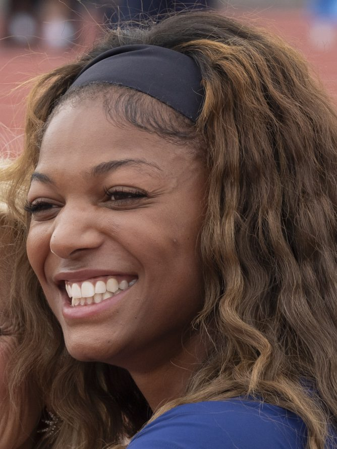

Jaylen Brown
An NBA champion who pairs elite play with curiosity, activism, and entrepreneurship. Proof that excellence on the court and growth off it can move together.
Not because I lack attention to detail, and not because I’m careless. I stopped because I realized that perfection is not singular. For me, writing without dotted i’s is cleaner, more efficient, and intentional.
At first, it was difficult. Years of habit pulled me back to convention. I would catch myself dotting an i and deliberately erase it. Over time, what was once automatic became a conscious decision. Eventually, the new standard became my default.
That process reflects how I approach both computer science and basketball.
In computer science, efficiency matters. Clean code matters. Intentional design matters. I constantly evaluate systems, whether it is an algorithm, a data structure, or a workflow, and ask myself if this is the cleanest and most effective way to solve the problem. If it is not, I refine it. Optimization is not accidental. It is deliberate. Like removing the dot above an i, small adjustments compound into meaningful improvements.
Basketball reinforces the same principle. The best players are not simply talented. They are disciplined. They study their mechanics, adjust their footwork, refine their shot selection, and repeat those refinements until they become instinct. I approach growth the same way. I identify inefficiencies, correct them intentionally, and practice until the better method becomes second nature.
What may look unconventional to others is rarely accidental for me. It is the result of deliberate iteration.
I do not change things to be different. I change them to be better, and I am willing to condition myself until better becomes standard.
I look up to people who are excellent in more than one arena: athletes, scholars, creators, and builders who refuse to choose a single lane.
An NBA champion who pairs elite play with curiosity, activism, and entrepreneurship. Proof that excellence on the court and growth off it can move together.

An Olympic champion and Harvard graduate who treats sport and scholarship as the same discipline: preparation, precision, and purpose beyond the finish line.
A performer who reinvented herself as a tech founder and engineer. A reminder that creativity and hard skills can share the same path when you keep iterating.
Lines I come back to when I need perspective, patience, or the reminder to run my own race.
Comparison is the thief of joy.
When nothing seems to help, I go and look at a stonecutter hammering away at his rock, perhaps a hundred times without as much as a crack showing in it. Yet at the hundred and first blow it will split in two, and I know it was not that last blow that did it, but all that had gone before.
Life is the most difficult exam. Many people fail because they try to copy others, not realizing that everyone has a different question paper.